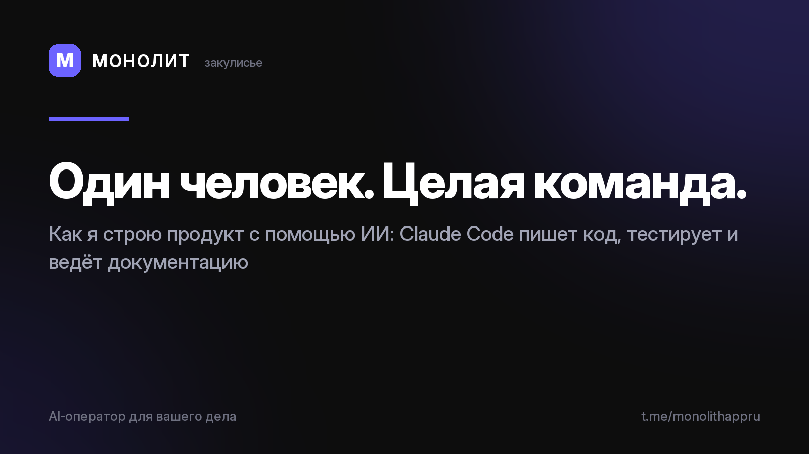

Дневник разработки · 02.07.2026
Закулисье, как один человек строит целый продукт

Закулисье: как один человек строит целый продукт
Меня спрашивают: как в одиночку сделать приложение с ИИ-ассистентом, финансами и шифрованием?
Ответ: я работаю не один. Мой второй пилот — Claude Code. Он пишет код, тестирует сборки на реальном телефоне, ведёт документацию проекта, а теперь помогает вести и этот канал.
Я задаю направление, принимаю решения и проверяю каждый экран — как режиссёр смотрит монтаж. ИИ делает рутину. Это позволяет двигаться со скоростью целой команды разработки, не имея команды разработки.
Двадцать лет назад для такого продукта нужен был офис и десять человек. Сегодня хватает одного человека с ясной целью и ИИ-инструментами. В следующих постах покажу, как именно устроена наша совместная работа.
МОНОЛИТ — учёт заказов, клиентов и денег одной фразой. Windows и Android, бесплатная бета.
Скачать Читать канал